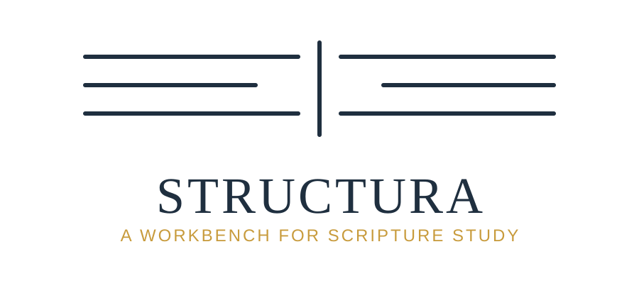

A workbench for studying the Hebrew Old Testament, Septuagint, and Greek New Testament. Loaded with full morphological data and a layered annotation system for linguistic, narrative, and discourse analysis.
Features
Structura combines reading, annotation, and discourse analysis in a single desktop application — available on macOS, Windows, and Linux.
Three display modes — Clean, Color-coded by part of speech, and Interlinear (lemma, Strong's, parsing, or constituent labels). Click any word for a full morphological panel. Full dark-mode support.
Display the built-in ULT alongside source text, or import your own translation via paste or USFM. Edit translation text in place. Multiple translations side by side with independent font sizing.
Mark paragraph breaks, add up to five levels of indentation, apply bold and italic per word. Define scene and episode breaks across a six-level hierarchy with headings and custom labels.
Draw RST (Rhetorical Structure Theory) relation arrows between paragraph segments using 14 relation types — Cause, Purpose, Concession, Condition, Sequence, and more. Also supports free-form directional arrows between individual words across verse boundaries.
Build a character cast with custom colors per book. Tag words as character references. Mark speech sections with 21 speech-act classifications including Command, Question, Promise, and Lament.
Export any annotated passage to PDF or PNG. Back up the entire database manually or on a schedule with configurable retention policies. Fifty-step undo for all annotation operations.
Text Sources
Structura ships with four bundled text sources covering the full biblical canon in Hebrew, Greek, and English.
Open Scriptures Hebrew Bible
Biblical Hebrew Old Testament with full morphological tagging — 305,507 words.
SBL Greek New Testament
Koine Greek NT with MorphGNT morphological data — 137,554 words.
Septuagint (Rahlfs 1935)
Koine Greek Old Testament with full text — 623,199 words.
UnfoldingWord Literal Text
English literal translation aligned to the source texts — 31,102 verses across 66 books.
Screenshots
Place screenshot images in docs/assets/screenshots/ and update this section.